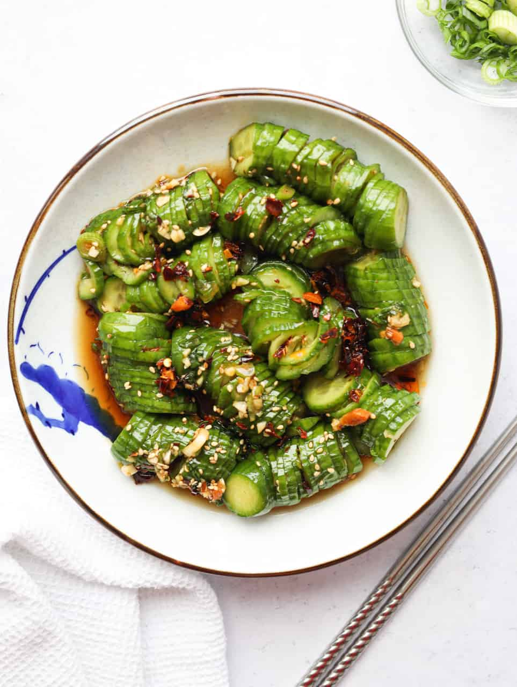

Spciy Cucumber Salad

This recipe is another classic traditional snack with a modern twist. The most of the ingredients are readily available and the recipe can be prepared without any cooking.
- soy sauce
- minced garlic
- rice vinegar
- chili oil
- sugar
- sesame oil
- sesame seeds
- green, onions
- stir in all the sauce ingredients into a bowl
- pour soy sauce over the cucumbers
- enjoy